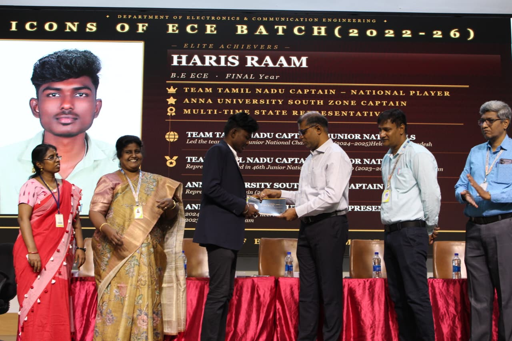

Hard Work | Discipline | Leadership | Success
I am Haris Raam, a passionate handball player and an Electronics & Communication Engineering graduate. My sports journey started with a strong interest in handball, and through dedication and consistent practice, I earned the opportunity to represent Tamil Nadu in national-level championships. Throughout my journey, I have participated in various district, state, and national tournaments, winning several medals and certificates. Serving as the captain of my college handball team strengthened my leadership, teamwork, discipline, and decision-making skills. Every competition has helped me grow both as an athlete and as an individual, motivating me to continue striving for excellence in sports and in my professional career. I have represented Tamil Nadu in several State and National level Handball Championships. This website contains all my sports achievements, certificates and memorable moments.